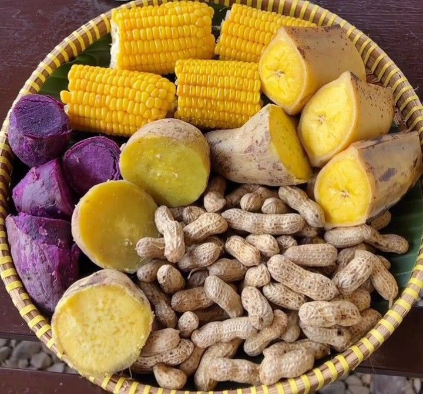
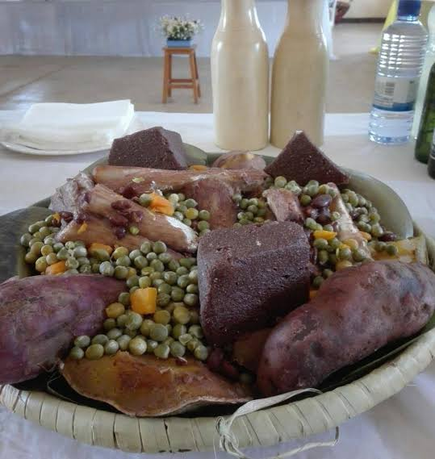

Every recipe is
a record.
We document Africa's food cultures with care, curiosity and respect for the people who carry them forward.

A richer picture of African food.
Tastes of Africa is an independent culinary discovery platform dedicated to the depth and diversity of a continent too often reduced to a handful of dishes.
We connect recipes to the landscapes, histories and communities that shaped them. Our work celebrates tradition without treating it as static, because food culture has always moved, adapted and grown.
- Share tested recipes
- Explain the culture behind them
- Credit the communities who created them
“To learn a cuisine is to learn how a people remember.”
Thousands of years in every pot.
African food history is a story of farming innovation, trade and exchange. Here are four moments that shaped what is cooked on the continent today.
-
Grains of Africa
Farmers on the continent domesticated sorghum, pearl millet, teff and African rice, crops still eaten every day.
-
Trade routes
Trans-Saharan caravans and Indian Ocean ships carried salt, spices, rice and new ideas between Africa, Arabia and Asia.
-
New-world crops
Maize, cassava, chillies, tomatoes and peanuts arrived from the Americas and soon became central to African cooking.
-
A global table
A new generation of cooks and chefs at home and in the diaspora is bringing African food to the world's attention.
Why food matters.
Across Africa, food carries meaning far beyond nutrition. It marks the seasons, welcomes newborns, joins families in marriage and honours those who have passed. Much of this knowledge is held by women and elders and passed down by cooking side by side.

Community
Eating from a shared bowl or platter is a sign of trust, equality and belonging.
Ceremony
From Ethiopian coffee ceremonies to West African wedding feasts, food is at the centre of celebration.
Memory
Recipes are often learned by watching, not reading, every family dish holds a piece of history.

African food travelled the world.
Enslaved Africans carried ingredients and skills to the Americas, transforming cuisines there. Okra gave its name and texture to Louisiana gumbo, African rice-growing knowledge shaped farming in the Carolinas, and Brazil's acarajé descends from West African akara bean fritters.
Coffee was first grown in Ethiopia, and today South African rooibos, Moroccan couscous and Nigerian jollof are enjoyed far beyond their home countries.
Visit Jemaa el-Fnaa.
Jemaa el-Fnaa, the great square of Marrakesh in Morocco, fills every evening with food stalls serving harira, tagines, grilled meats and snail soup. Its living traditions are recognised by UNESCO as part of the Intangible Cultural Heritage of Humanity.